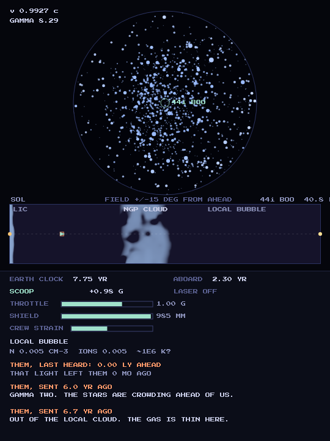
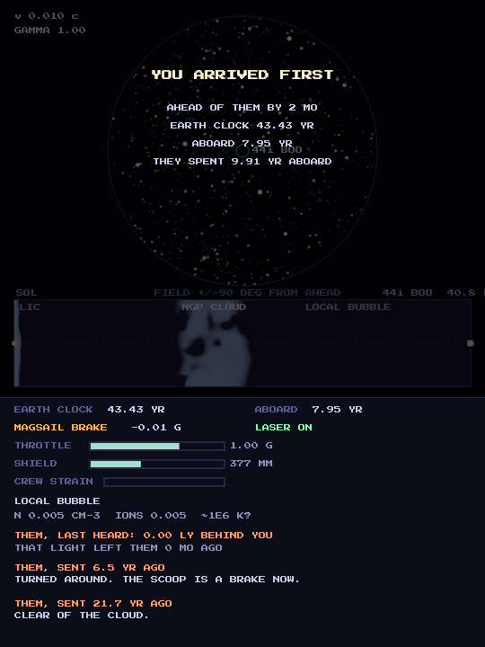

Two ships leave Sol for 44 Bootis, a real triple star 40.8 light-years away whose two inner stars orbit so close that they touch. The other one left first. Nothing overtakes near the speed of light, so the race is decided at the end: who gets there and slows to a stop first.
Your drive is a Bussard ramjet, which scoops the gas between the stars for fuel. Dense gas is fuel while you are slow and dust and drag once you are fast, so the clouds on the way are the game. The gas is the real local medium, the stars are the real sky, aberrated and Doppler-shifted as you speed up, and you only ever see the other ship where its light says it was.


game by magmacrunch media
title from the Texas Hold'Em Lava Dome song, on Pompous Fanfare for All Occasions
distance Hipparcos 2007 (van Leeuwen); gas Redfield and Linsky 2008, with the clouds' shapes invented and marked so; sky the Yale Bright Star Catalogue